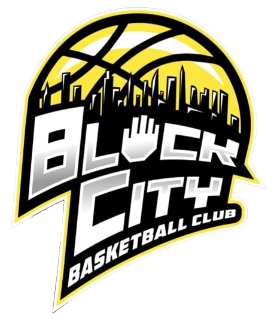

  <nav class="navbar sticky-top navbar-expand-lg navbar-dark bg-dark" id="nav">

    

    <div class="navbar-collapse" id="navbarSupportedContent">
      <ul class="navbar-nav mr-auto">
        <li class="nav-item active">
          <a class="nav-link" routerLink = "/home" routerLinkActive="active">Home</a>
        </li>
        <li class="nav-item">
          <a class="nav-link" routerLink = "/stats" routerLinkActive="active">Stats</a>
        </li>
        <!-- <li class="nav-item">
          <a class="nav-link" routerLink = "TotalStats" routerLinkActive="active">Total Stats</a>
        </li> -->
      </ul>
    </div>
  </nav>

  <div class="pos-f-t" id="Ham">
    <div class="collapse" id="navbarToggleExternalContent">
      <div class="bg-dark p-1">
        <a class="nav-link" id="hamlink" routerLink = "/home" routerLinkActive="active">Home</a>
      </div>
      <div class="bg-dark p-1">
        <a class="nav-link" id="hamlink" routerLink = "/stats" routerLinkActive="active">Stats</a>
      </div>
    </div>
    <nav class="navbar navbar-dark bg-dark">
      <button class="navbar-toggler" type="button" data-toggle="collapse" data-target="#navbarToggleExternalContent" aria-controls="navbarToggleExternalContent" aria-expanded="false" aria-label="Toggle navigation">
        <span class="navbar-toggler-icon"></span>
      </button>
    </nav>
  </div>


<!-- Page content -->
<div class="content">
  <router-outlet></router-outlet>
</div>


